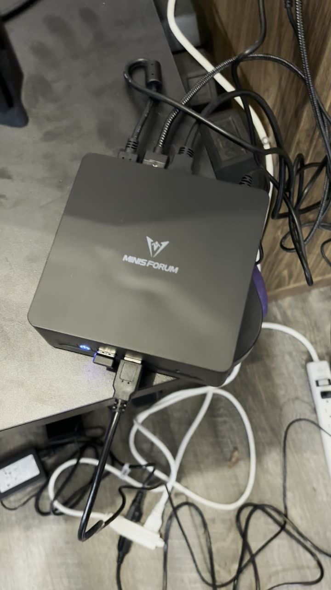
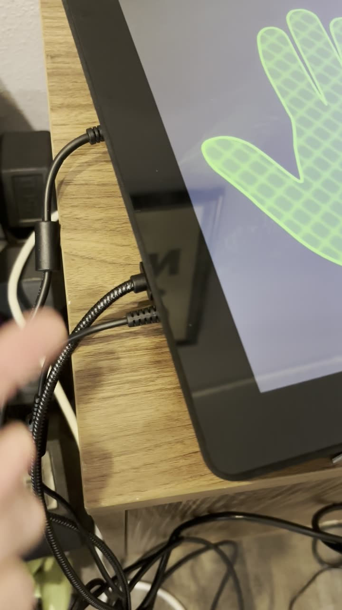
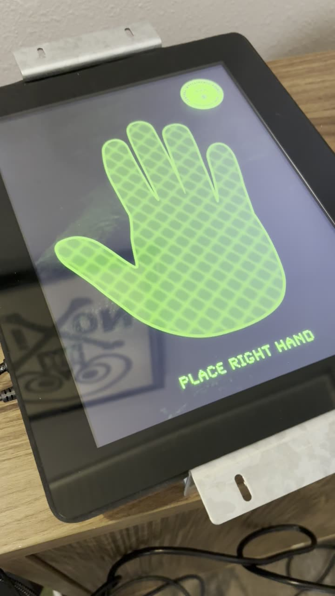
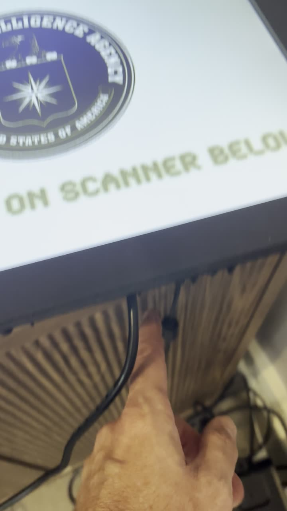
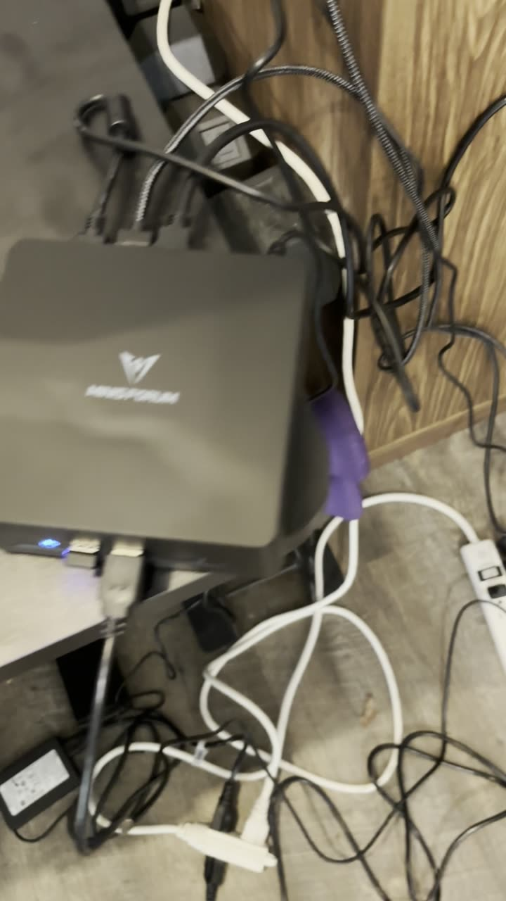
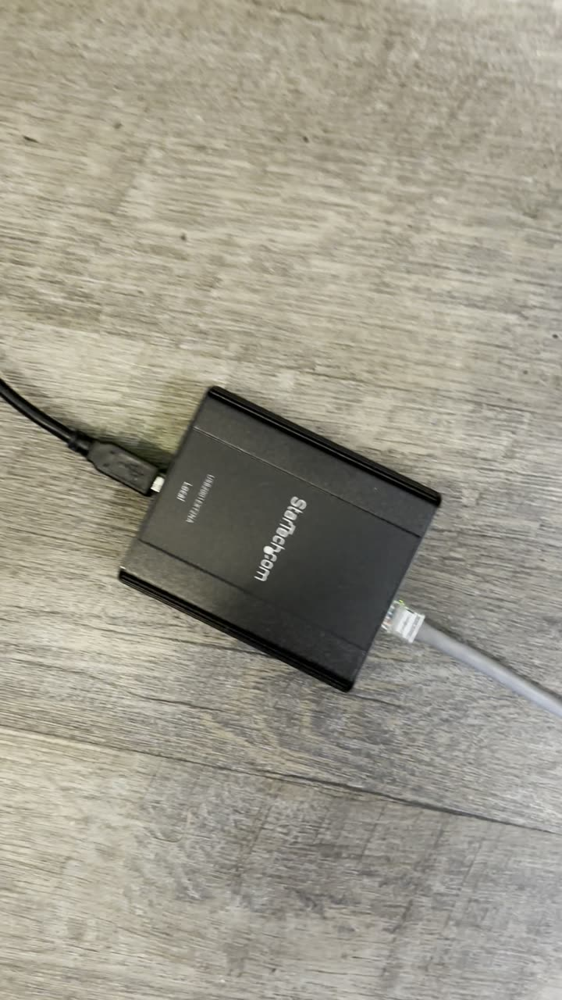
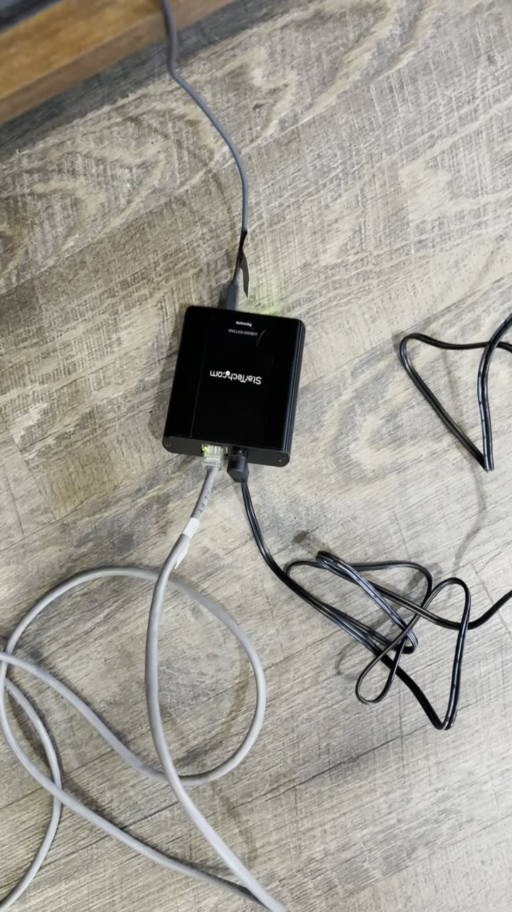
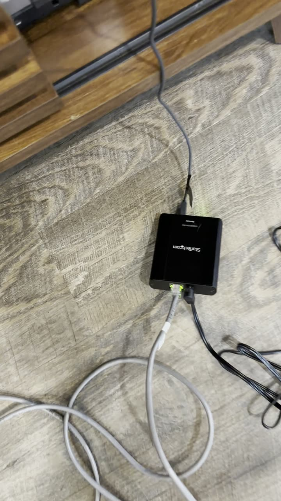
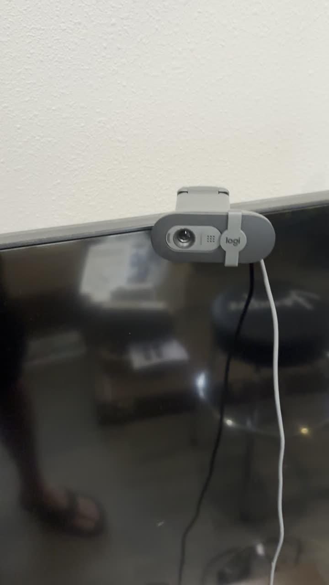

Place the computer
Set the mini PC where it can reach both monitors and the extender. Don't turn it on yet.
How to connect the computer, both screens, and the camera. The two screens are wired the same way as the original exhibit; the camera now connects over USB through an extender.
Computer ──── video ──────────────► Main monitor (seal screen) Computer ──── video ──────────────► Touchscreen (hand scan) Computer ◄─── touch USB ─────────── Touchscreen Computer ──── USB ────────────────► Extender, computer end Extender, computer end ═══ network cable (existing run) ═══ Extender, camera end Power supply ─────────────────────► Extender, camera end Extender, camera end ── USB ──────► USB camera (in the satellite)
Plus power to the computer, both monitors, and the camera-end extender.
Minisforum mini PC, with its power adapter.
The large screen that shows the CIA seal. Video cable and power cord.
The small hand-scan screen. Video cable, touch USB cable, and power adapter.
StarTech pair: one box for the computer end and one for the camera end, plus the camera end's power supply.
The existing cable run from the computer to the satellite.
Logitech USB webcam, mounted in the satellite.
For the computer, both monitors, and the extender's power supply.
Set the mini PC where it can reach both monitors and the extender. Don't turn it on yet.

Same three connections as the original exhibit:

The touchscreen sits below the main monitor, upright (portrait), where visitors place their hand.

Just two connections:

Plug a normal USB cable into a USB port on the computer.

Plug the other end of that USB cable into the extender's computer-end box. Plug the network cable into the box's network port.
This box gets its power over USB from the computer; it doesn't need a power supply.

Use the existing network cable run to the satellite. Plug it into the network port on the extender's camera-end box.

The camera-end box needs its own power. Plug its power supply into the box and into the power strip. Its lights come on when it's powered and linked.

Plug the USB camera in the satellite into the USB port on the camera-end box. Aim it at where visitors stand at the hand scanner.

For the technical contact: installing the app and setting up Windows kiosk mode are covered in the README at github.com/scottdickerson/bush-library-cia-spy-cam. Staff day-to-day instructions are in Kiosk care & feeding.